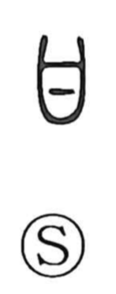

甘

Uncategorized
Kun: amai, amaeru, amayakasu | On: kan
sweet ・ to indulge ・ to pamper
Explanation
In early script, 甘 is a pictograph of a lock with a key inserted—its original sense is “key” and, by extension, the act of setting or inlaying something in place. From this shape and idea of clamping or insertion arose related graphs such as 拑, which depicts holding the mouth shut, and 鉗, for the metal shackles that restrain the neck or hands—implements of punishment. The familiar sense “sweet” appears to have been transferred to 甘 through association with 苷 and with 甘草, the licorice plant whose root has a notably sweet taste. Thus the character’s ancient image of a fitted lock later came to include the notion of sweetness.